O que é arte digital
Arte digital é qualquer tipo de manifestação artística criada
com o auxílio de tecnologias digitais. Isso inclui desde a
produção de imagens e vídeos até animações e esculturas,
utilizando softwares, computadores, tablets e outros
dispositivos eletrônicos.
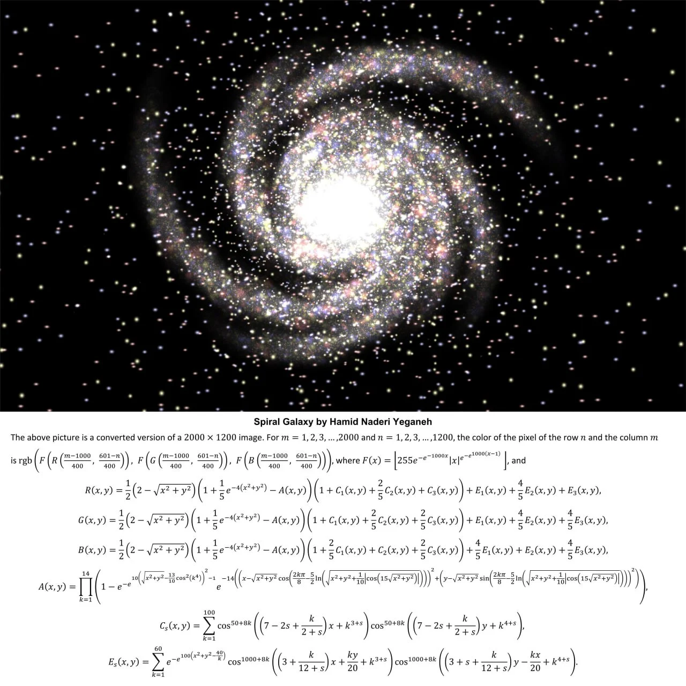
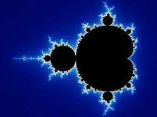
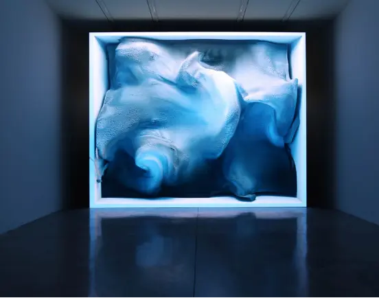
O que é arte tradicional
Arte tradicional refere-se a formas de expressão artística que
utilizam meios físicos e técnicas convencionais, como pintura,
escultura, desenho, gravura, cerâmica, tecelagem e outras formas
de artesanato.
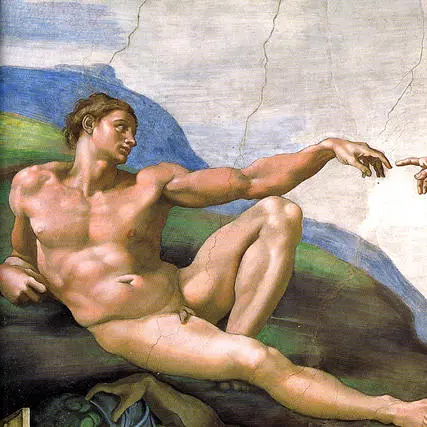
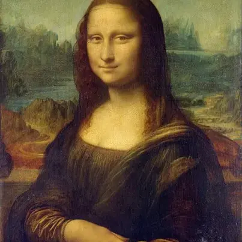
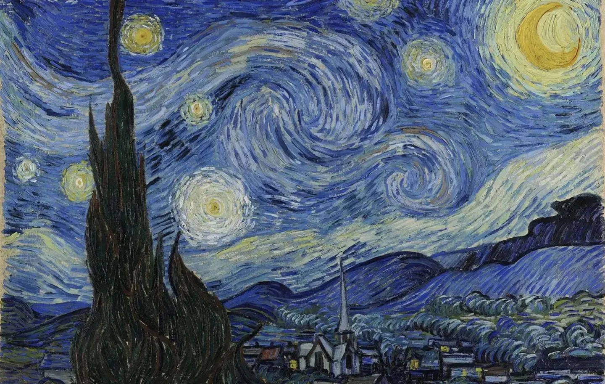
Arte digital como extensão da arte tradicional
A arte digital pode ser vista como uma extensão da arte
tradicional, utilizando a tecnologia para ampliar as
possibilidades criativas e expressivas, sem necessariamente
substituir os métodos tradicionais.
A arte digital vem se consolidando como uma forma significativa
de expressão artística contemporânea, impulsionada pelo
constante desenvolvimento de softwares de criação e manipulação
de imagens, vídeos, sons e ambientes interativos. Com a
integração cada vez mais fluida entre diferentes ferramentas
tecnológicas, os artistas têm descoberto e explorado novas
linguagens e possibilidades expressivas anteriormente
inacessíveis.
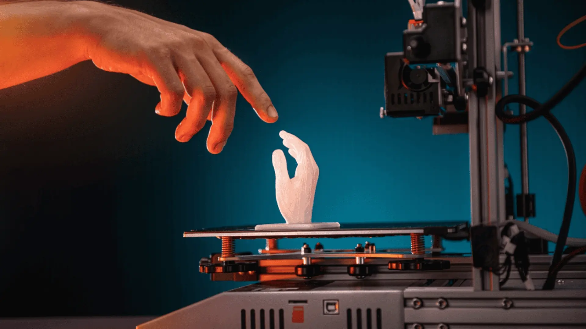
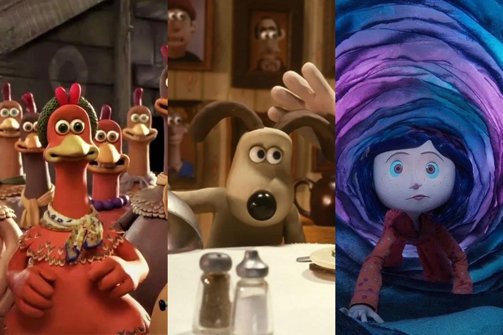
IA na arte
A inteligência artificial (IA) representa uma das formas mais
proeminentes de criação na arte digital contemporânea,
englobando a produção de vídeos, imagens, textos e sons.
Operando por meio de algoritmos matemáticos complexos, a IA
recebe uma entrada, como um simples prompt — “Uma casa na
árvore” — e gera uma saída, como uma imagem correspondente.
Como assim?
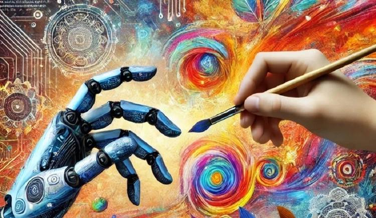
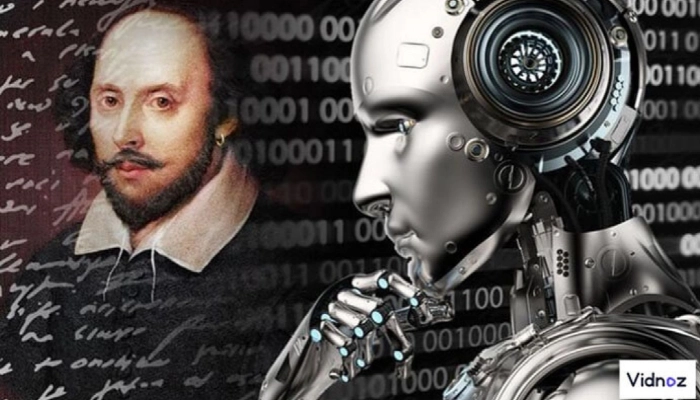
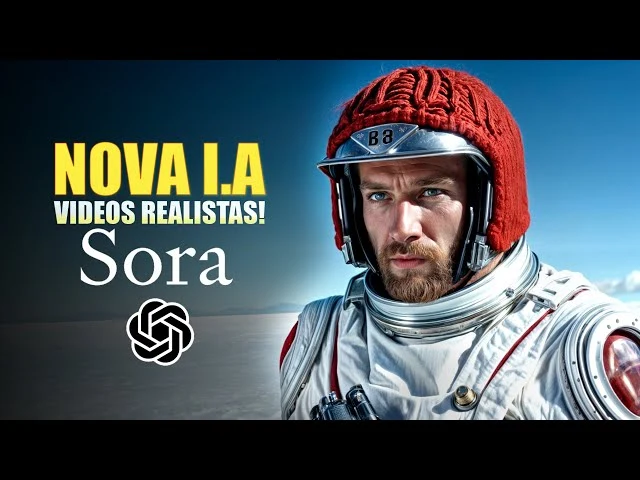
Objetivo do site
Neste trabalho vamos mostrar como a arte digital abre caminhos
para a criação artística de maneiras totalmente novas. Com o
auxílio de ferramentas modernas e acessíveis, é possível
experimentar formas de expressão que antes estavam restritas a
quem tinha contato com materiais tradicionais ou espaços
específicos de produção artística. Agora, qualquer pessoa com um
computador ou até mesmo um celular pode transformar sentimentos,
ideias e experiências em obras que carregam sua identidade. A
arte digital, portanto, não apenas amplia os recursos criativos,
mas também dá voz a pessoas que talvez nunca tivessem a chance
de se expressar por meios convencionais, permitindo a criação de
trabalhos únicos, pessoais e cheios de significado.